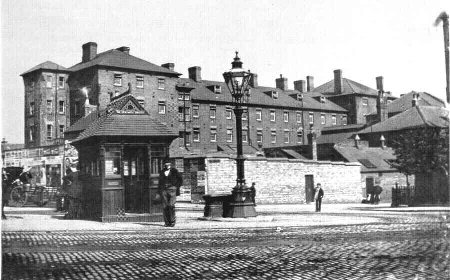

Bunting
Surname Origin: Pre-Norman origin. A kind of bird.

19th Century distribution of the Bunting surname
We have traced the Bunting's back to the birth of William Bunting in 1802. He married Mary and they settled in Mansfield, Nottinghamshire, having thirteen children between 1826-50. The 1841 Census records them as coming from outside of Nottinghamshire and it is possible that they both originated from Lincolnshire as Mary's place of birth is shown as Sleaford on later census returns. William, described as a plasterer, died one year after the birth of his last child. William and Mary's eldest son was Walter Bunting. Like his father Walter was a plasterer and by 1861 he had married Louisa from Crewkerne in Somerset and they had settled in St Mary's Nottingham. They had four children, the youngest being William Bunting. Sadly Walter ended his days in the Union Workhouse, recorded in the York Street Workhouse in 1891 and the Great Freeman Street Workhouse in 1901.

York Street Workhouse, Nottingham
It is not clear whether there is a proven blood line back to the Buntings. Mary Ann Keetley (b. 1860 and wife of <a href="../noble/thomas/thomas.html">Thomas Noble</a> ) took the name Bunting on the marriage of her mother Clara Keetley to William Bunting in 1881. Mary Ann's father is unknown and was not recorded in the birth registration, however, William Bunting was also living at 11 Herbert Street in 1877 at the time of <a href="../keetley/mary/maryann.html">Mary Ann Bunting's</a> birth. He then married Clara four years later. Clara, or 'Granny Bunting' as she was later known, lived on until 1952 and died at the age of 91.
Current Research : There is no active research taking place into the Buntings at this time.
<a href="http://wc.rootsweb.ancestry.com/cgi-bin/igm.cgi?op=SHOW&db=noblefamilia&recno=624">Click here</a> for full details of our Bunting ancestry
July 14, 2011